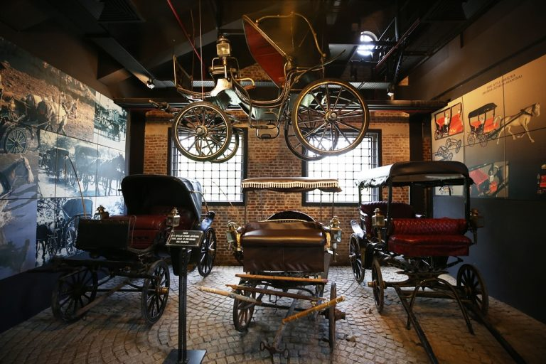
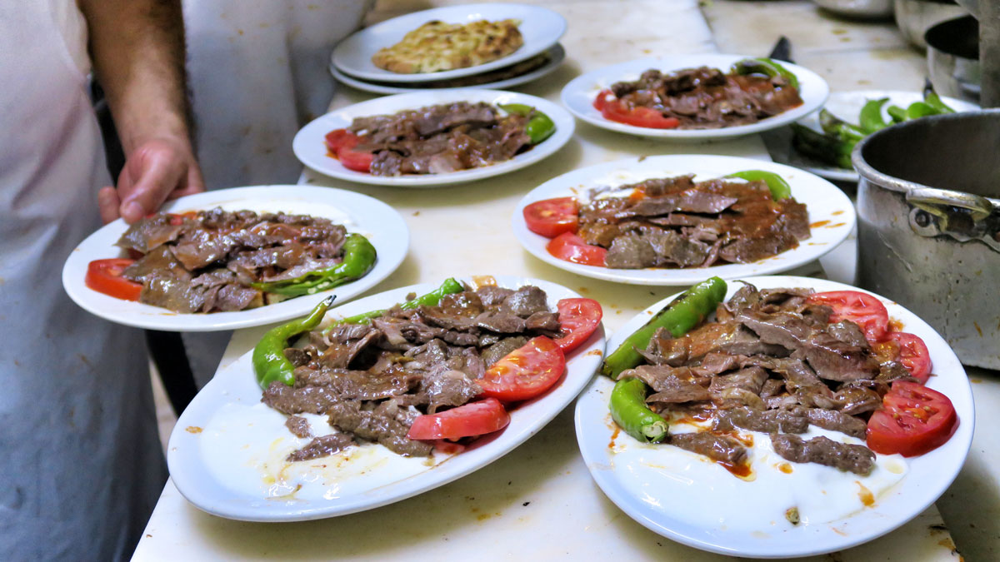

Koza Han 15. yüzyıl sonlarında II. Bayezid tarafından mimar Abdül ula bin Pulat Şah'a İstanbul'daki eserlerine vakıf olarak Bursa'da yaptırılmış handır.Ulu Cami ile Orhan Cami arasında bulunan yapının avlusunda, altında şadırvanı olan minik bir mescid vardır. Osmanlı devri han ve kervansaray mimarisinde -ortasındaki mescid bakımından - eski gelenekleri sürdüren ve bütünlüğünü koruyabilmiş olan bir eserdir. Geçmişte birçok adla almıştır: Yeni Han, Han-ı Cedid, Han-ı Cedid-i Evvel (Pirinç Han’ın yapılmasından sonra), Han-ı Cedid-i Amire, Yeni Kervansaray, Beylik Han, Beylik Kervansaray, Simkeş Han, Sırmakeş Han ve Koza Han".İpek kozası ticareti bu handa yapıldığından Koza Han adıyla anılır olmuştur. Koza ticareti için Bursa'ya gelen ipek tüccarları konaklama hizmeti veren handa altlı üstlü iki oda tutmuşlar; üstteki odayı ticari işlerini görmek ve konaklamak, alttaki odayı da ticaret mallarını depolamada kullanmışlardır.Han, günümüzde ticarî işlevini korumaktadır.
Bursa Teleferik, Türkiye'nin ilk teleferik hattıdır. 29 Ekim 1963'te açılmıştır. Bursa'nın şehir simgelerinden biri olan Bursa Teleferik aynı zamanda halatlı taşımacılık alanında 9 km yatay uzunluğu ile Türkiye'nin en uzun teleferik hattıdır. İstasyonlarında bulunan eğlence merkezleri ve alışveriş dükkanları ile aynı zamanda bir yaşam merkezidir. Bünyesinde 4 istasyon barındıran Bursa Teleferik ilk istasyon olarak Güney Bursa'da yer alan Yıldırım ilçesine yakın olan Teferrüç Mahallesi'ndeki Teferrüç istasyonundan kalkmakta ve Uludağ'daki oteller bölgesine ulaşmaktadır. Daha fazla bilgi için tıklayınız.

Bursa’da bir mezarda bulunan ve daha önce Bursa Arkeoloji Müzesi’nde sergilenmekte olan 2600 yıllık bir savaş arabası müzede sergilenen en önemli eserlerdendir. Türkiye’nin çeşitli illerinden seçilerek bir araya getirilen kağnılar, at ve öküz arabaları, top arabaları, ot arabası, odun arabası gibi pek çok araba, panyolar, çarklılar, yarım esebey, Briçka gibi tarihi arabalar çok ince işlemlerden geçirilerek restore edildikten ve sınıflandırıldıktan sonra sergilenmektedir. Müzede Tofaş üretimi 8 otomobil de yer almaktadır. Daha fazla bilgi için tıklayınız.

İskender kebap veya İskender döner, Bursa yöresinin meşhur kebap yemeklerinden biridir. 1867 yılında Kayhan Çarşısı'nda başlamıştır. Aslında temel malzemesi Döner olsa da, İskender'i İskender yapan, üstündeki tereyağ, domates sosu, yanındaki yoğurt ve altındaki yağlı pide parçalarıdır. Ayrıca, İskenderin eti herhangi bir dönerin etinden farklıdır. İskender kebabının yapıldığı et Uludağ kekiği ile beslenen koçlardan elde edilir. İskender etinin yağı daha az olur. Kullanılan domates sosu ve yoğurt da kaliteyi çok etkilemektedir.